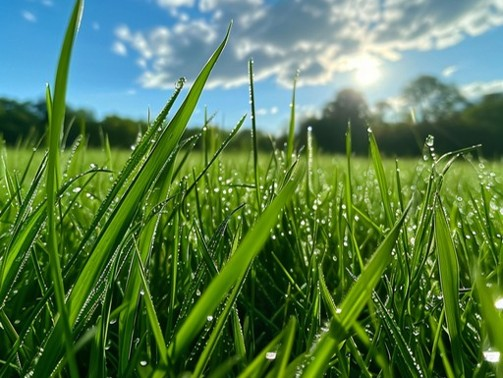

Average High Temperature
Higher temperatures increase plant and soil water loss, often raising irrigation demand.
QUARTERLY IRRIGATION REPORT
Loading location...
Water use and weather, month by month.
TEST report.

THE QUARTER AT A GLANCE
Select a month to highlight it in the chart.
EXPLORE THE RELATIONSHIP
All three months shown. Select a card or chart point for details.
The left and right axes use different units.
WEATHER REFERENCE POINTS
Higher temperatures increase plant and soil water loss, often raising irrigation demand.
Measures estimated water loss from soil and plants; higher ET generally means more water is needed.
Rainfall reduces the amount of supplemental irrigation required, depending on timing and intensity.
REPORT INSIGHTS
Irrigation usage is influenced by temperature, evapotranspiration, precipitation, and site-specific landscape conditions.
Reviewing these factors alongside actual water use helps identify seasonal patterns and evaluate system performance.
Ongoing monitoring can support more informed watering decisions, improve water efficiency, and help detect potential system issues.